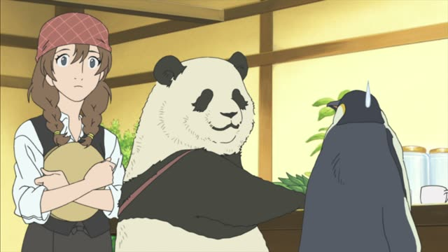
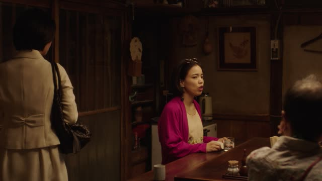
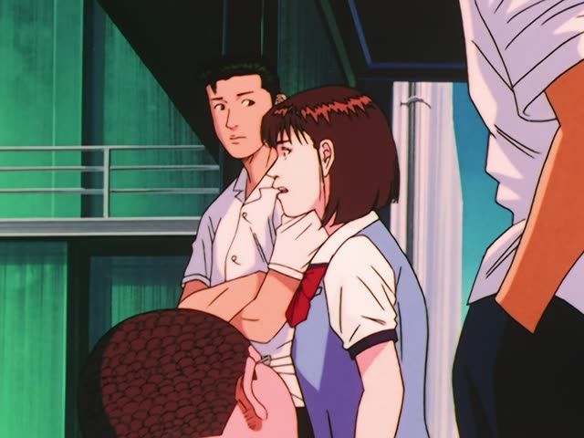
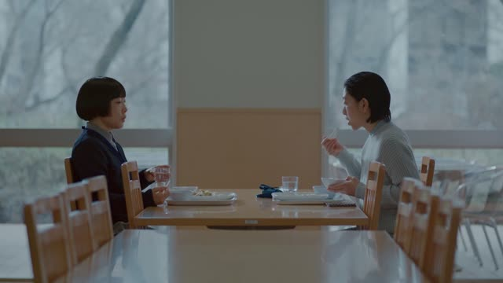
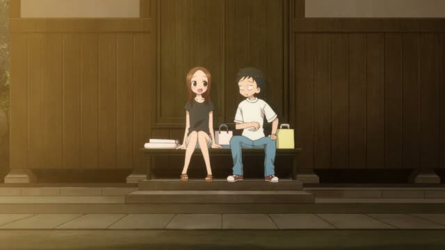
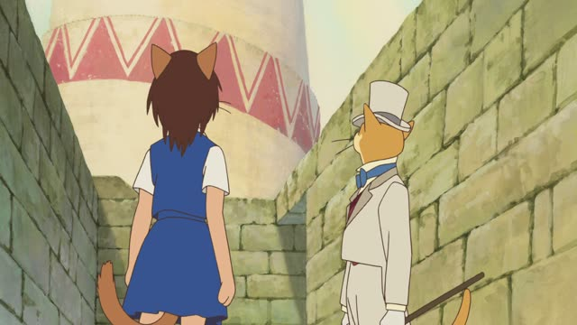
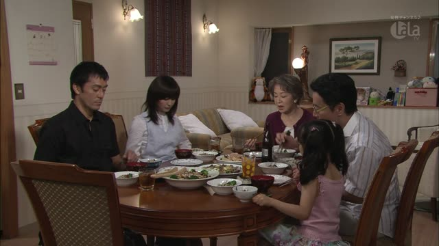

～ないで (Without)

Shirokuma Cafe · Episode 38
えっ、何か知らないでずっと飲んでたんですか。
"What? You've been drinking it all this time without knowing what it is?"
～ないで + another verb means "without doing": you do the second thing, and the first one doesn't happen. Take the ない-form and add で: 知らない → 知らないで.
On this card, Grizzly has been drinking something for ages and doesn't know what it is. 知らないで飲んでた: drinking it without knowing. ですか makes it polite.
At the end of a sentence, ないで means "don't" (見ないで！). That's the ～ないでください page. Here there's always a verb after it.

Midnight Diner: Tokyo Stories · Season 2, Episode 3
あんた、なんにも食べないで帰るつもり？
"You're going home without eating anything?"
On this card, the owner stops a customer who is leaving the diner with an empty stomach. 食べないで帰る: going home without eating.
Quick Examples
You overslept this morning.
朝ごはんを食べないで来ちゃった。
"I came without eating breakfast."
CasualA friend asks how you got to work in the rain.
傘を持たないで出かけました。
"I went out without an umbrella."
PoliteYour roommate stayed up all night.
寝ないで勉強したの？
"You studied without sleeping?"
CasualOrdering coffee.
砂糖を入れないでください。
"Please don't put sugar in."
At the end before ください: "don't". A different use.
PoliteWith and without
寝ないで！
"Don't sleep!" ないで at the end: a request.
寝ないで勉強した。
"I studied without sleeping." ないで + a verb: without.
Examples from Media

Slam Dunk · Episode 91
ゆうべは桜木君、一睡もしないで頑張ったんだから。
"Sakuragi worked hard last night without sleeping a wink."
Kekkon Dekinai Otoko · Episode 7
何も聞かないで、今夜泊めて。
"Let me stay tonight, without asking anything."

Brush Up Life · Episode 8
私、あのワサビつけないで食べるからさ。
"I eat it without putting that wasabi on."
The little wasabi packs that come with supermarket sashimi.

Teasing Master Takagi-san · Season 2, Episode 11
知らないで食べたらびっくりしたと思うけど。
"If you'd eaten it without knowing, it'd have surprised you."
Porco Rosso
おりないで行ってしまったわ。
"He went off without landing."
About Porco's plane, flying past the hotel.
1 Litre of Tears · Episode 8
助けてもらわないで済む方法だって考えたよ。
"I even thought of a way to get by without needing help."
～ないで済む = to get by without.

The Cat Returns
絶えず塔を見るんだ。方角を見失わないで済む。
"Keep looking at the tower. That way you won't lose your direction."
～ないで済む again: you're spared from it.

Kekkon Dekinai Otoko · Episode 2
どうせ、栄養なんか何にも考えないで
"You probably cook without thinking about nutrition at all..."